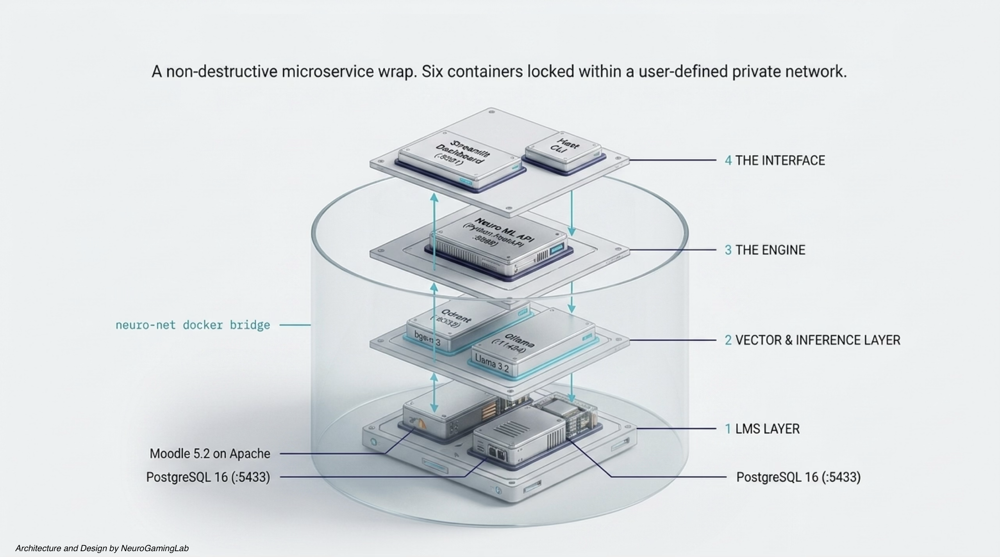

Neuro-Moodle-LLM
A self-hosted stack — Moodle 5.2,
PostgreSQL 16, Qdrant, and
Ollama (chat: Llama 3.2 ·
embeddings: nomic-embed-text) — paired with a
Python integration layer (neuro-moodle-llm,
FastAPI + Streamlit) that ingests Moodle course
content into Qdrant and answers course-scoped
questions via Ollama. Grounded RAG plus an
ML layer for synthetic courses, closed-loop
quiz-attempt evaluation, agentic feedback, and drift / judge
monitoring — Moodle core stays unchanged.

Architecting an AI LMS — The Neuro-Moodle-LLM
A custom-built Moodle image (official tarball on pinned
PHP 8.3 + Apache) — core is unchanged. The ML stack lives
in a separate neuro-moodle-llm container on
:8888; a thin local_neurollm plugin is the only
seam — it adds an in-course chat link, exposes
custom Web Services for synthetic-course authoring, and
ships an event observer that POSTs quiz submissions to
the API for closed-loop evaluation.
Neuro-Moodle-LLM — Connecting Moodle to a private, local AI
nomic-embed-text · sparse BM25
· RRF fusion), cross-encoder rerank, semantic chunking,
embedding cache, and grounded answers with citations. The embedding
model is swappable via OLLAMA_EMBED_MODEL (e.g.
bge-m3, mxbai-embed-large) — re-ingest
after switching.
must_cite_hit@k and topic_recall@k per
attempt.
mod_assign_save_grade.
:8501 —
RAG playground, ingest, eval & monitor, HITL, audit, DPO export,
event simulator, and the synthetic-course publisher.
cp .env.example .env
docker compose up -d --build
docker compose exec ollama ollama pull llama3.2 # OLLAMA_CHAT_MODEL
docker compose exec ollama ollama pull nomic-embed-text # OLLAMA_EMBED_MODEL
# Mint the Moodle web-service token used by the ML API
docker cp docker/bootstrap-webservice.php neuro-moodle-llm-moodle-1:/tmp/bootstrap-webservice.php
docker exec neuro-moodle-llm-moodle-1 php /tmp/bootstrap-webservice.php
# → paste the printed MOODLE_TOKEN=… into .env, then restart the API
# Moodle UI : http://localhost:8080 (admin / set in .env)
# ML API : http://localhost:8888/docs (Swagger)
# Streamlit : http://localhost:8501